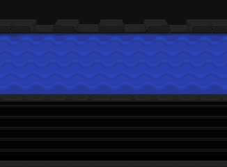
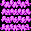

|
|||||
| raptorBASIC+ | rB+
commands |
rB+
tutorials |
working
with rB+ |
contact |
links |
| rB+ tutorials :: 1.1 the rB+ game application forms |
|
In tutorial 0 we gained an understanding of the parts of the Jaguar that concern us, now we can begin making things appear on screen armed with a basic knowledge of how it happens. As we said, the screen is made up of a collage of sprites that form the whole picture. We went through a slightly simplified version of one of the sprite definitions (the list of properties that tell the Jaguar what our sprite will look like and how it will act), so our first job will be to create a working raptor list file by editing the existing RAPINIT.S file... remember, DON'T PANIC, the .S file isn't us programming in assembler - we're just filling in a sprite request form to hand in to our Jaguar via raptor :0) OK, so let's define a background picture - a backdrop over which we can create our game. Game...? Nobody mentioned making a game! That's true, but why else would you be here? Yes, we're going to make our own little game, what better way to see how easy it can be than getting the basics of one up and running. When creating our list, the order in which we place the sprite definitions is important. The higher up the list, the deeper back the sprite will be on screen, behind sprites that are lower down in the list. For example - if we have a backdrop space scene image and a space ship sprite that flies around over it, we'd want to make sure the background sprite is defined before the rocket ship, otherwise we'd never see our ship. So let's use what we learned last time to define our background. The graphics are already made, we only have to describe them to the Jaguar. 
background.bmp is a 16 colour 352 by 240 pixels image. We don't need it to be transparent because there is nothing behind it, so we'll set it to opaque. It won't ever move unless we decide that might be useful (if it somehow makes sense in our game) so for now it'll just sit still where we put it. What better place to put it than x=0, y=0? Think back to those properties we looked at in the simple English version of the definition as you read through an actual sprite definition. ; background - object 1 ; value possible values description rB+ label to access dc.l 1 ; ; How many sprites like this one do you want in the sprite list? dc.l is_active ; is_active is_inactive ; Will the sprite be active on screen or inactive? ; R_sprite_active dc.w 0,0 ; ; Put sprite this many pixels from left side of screen. ; R_sprite_x dc.w 0,0 ; ; Put sprite this many pixels down from top of screen. ; R_sprite_y dc.w 0,0 ; ; How many pixels will this sprite move automatically in x? ; R_sprite_xadd dc.w 0,0 ; ; How many pixels will this sprite move automatically in y? ; R_sprite_yadd dc.l 352 ; ; Width of sprite in pixels ; * R_sprite_width dc.l 240 ; ; Height of sprite in pixels ; * R_sprite_height dc.l is_normal ; is_normal is_flipped ; Will the sprite be mirrored in x? ; R_sprite_flip dc.l 0 ; ; Collision box x offset - pixel distance from centre of sprite ; * R_sprite_coffx dc.l 0 ; ; Collision box y offset - pixel distance from centre of sprite ; * R_sprite_coffy dc.l 352/2 ; ; Width of collision box from centre in pixels ; * R_sprite_hbox dc.l 240/2 ; ; Height of collision box from centre in pixels ; * R_sprite_vbox dc.l SPRITE_BG ; ; Place in memory where the sprite lives: label from RAPAPP.S ; R_sprite_gfxbase dc.l 4 ; 1, 2, 4, 8, 16, 24 ; Sprite graphics type: 1,2,4,8,16 or 24 bit ; * R_sprite_? dc.l is_RGB ; is_RGB is_cry ; Sprite graphics type. RGB or Atari's CRY format. ; * R_sprite_? dc.l is_opaque ; is_trans is_opaque ; Trans for see-through background, opaque for solid background ; * R_sprite dc.l 352*240/2 ; ; Size of sprite in bytes - used to find next frame of animation; R_sprite_framesz ; Enter the x-size * the y-size and add the following next: ; /8 for 1bit ; /4 for 2bit ; /2 for 4bit ; nothing for 8bit ; *2 for 16bit ; *4 for 24bit dc.l 352/2 ; ; Width of a single row of sprite pixels ; * R_sprite_bytewid ; Enter the x-size and add the following: ; /8 for 1bit ; /4 for 2bit ; /2 for 4bit ; nothing for 8bit ; *2 for 16bit ; *4 for 24bit dc.l 0 ; ; Number of screen updates (VB) before the animation advances ; R_sprite_framedel dc.l 0 ; ; Additional number of animation frames after the first ; R_sprite_maxframe dc.l ani_rept ; ani_rept ani_once ; Loop the animation or play a single time ; R_sprite_animloop dc.l edge_wrap ; edge_wrap R_edge_kill ; What do you want to do if sprite leaves the edge of the screen?; R_sprite_wrap dc.l spr_inf ; spr_inf ; Want sprite to stay forever or a number of frames? ; R_sprite_timer dc.l spr_linear ; spr_linear ; Use automatic movement above or use a tracking table. ; R_sprite_track dc.l 0 ; ; If using above tracking table, input the loop point here ; R_sprite_tracktop dc.l spr_unscale ; spr_unscale spr_scale ; Is the sprite going to be scalable or not scaled? ; R_spr_scaled dc.l 32 ; ; 32 is 1:1. 0-31 are scaled down, 33-255 are scaled up. ; R_sprite_scale_x ; It's probably best to think of the binary number %00100000... ; Adding numbers to the right increases the size fractionally... ; Adding them to the left increases buy a factor of one each time ; So %01000000 is scaled 2x bigger than the original ; %00010000 is scaled half size ; %00010001 is a tiny bit bigger than half size dc.l 32 ; ; 32 is 1:1. 0-31 are scaled down, 33-255 are scaled up. ; R_sprite_scale_y ; See above for more info. dc.l -1 ; ; Did the sprite collide with another? ; R_sprite_was_hit ; Set to not hit to begin with, used later to flag collisions dc.l 0 ; no_CLUT ; Define sprite colours. ; R_sprite_CLUT ; no_CLUT for 8, 16 and 24bit ; CLUT number 0 to 15 for 1, 2 and 4bit dc.l cant_hit ; can_hit cant_hit ; Want to be able to check if this sprite hits others? ; R_sprite_colchk dc.l cd_keep ; cd_keep cd_remove ; What to do if a collision is detected. ; R_sprite_remhit dc.l single ; single ; Bounding box for collision detect 'single'. Or address of table; R_sprite_bboxlink dc.l 1 ; ; Hit points before sprite is killed ; R_sprite_hitpoint dc.l 0 ; ; Hit points inflicted upon other sprites ; R_sprite_damage dc.l 352/2 ; ; Width of sprite within larger graphic. ; R_sprite_gwidth ; Enter the x-size and add the following: ; /8 for 1bit ; /4 for 2bit ; /2 for 4bit ; nothing for 8bit ; *2 for 16bit ; *4 for 24bit It's not really all that different, is it? There's a few odd looking numbers and a few new nickname labels to consider, but there's nothing here we can't get our heads around with a bit of thought. All we have to do is fill in the numbers and nicknames in the "value" column - the rest is just comments to help remind us what's what and a few assembler commands. But we do need to explore a few things or at least touch on them as there are some things here we might not instantly understand. You'll see the x and y positions given as recognisable numbers, but why 0,0 for a single pixel value? What are those weird-looking assembler things "dc.w" and "dc.l" - yikes?! And why are there little sums instead of whole numbers when describing certain aspects? These are a few minor points, nothing more. Firstly, the 0,0 type numbers. We might be used to seeing two numbers like this: a,b to describe both x and y co-ordinates. So why somethign that looks like a,b to describe one value? Well, we don't really need to worry about this right now, but it's good to be aware that rB+ allows us to have sub-pixel precision for our sprite placement. Every pixel is described by both a whole number - the bit we're used to, e.g. 100 defining the 100th pixel along the screen, and a fractional number. What good is that? Well, it is pretty useful actually. Instead of wobbly or jerky movements as our whole numbers fail to describe a smooth transition from point A to point B, we get to position, locate and manage sprites to a degree much finer than the actual pixels we see. The great part is that a lot of the time we don't even need to worry about this weird fractional part, as raptor takes care of those things on the whole, we just feed it a few values here and there and then manage them in a pretty hands-off kind of way a lot of the time. But right now, we're only going to consider the whole numbers part and simply place this sprite accurate to whole pixels. It's a static backdrop after all. And the little sums? Simple really - it's to help us read back what we've entered in a more humanly readable and friendly way. It's all calculated at build time and doesn't tax the system at all, it just means we can more readily edit and understand something we typed days or months ago as we're not presented with just the results of the larger calculation but all the steps involved in reaching it. It's purely optional, feel free to throw in the calculated numbers if you prefer, but the safest way is to keep it sensible-looking and maintainable. Let's look at an example. The size of the sprite is 352 by 240 pixels. In order for raptor to work its magic, it requires us to let it know the actual amount of memory that takes up. So where we see 352*240/2 We see two really obvious numbers we're happy with. The extra /2 is what? This part of the sum helps tell raptor how much memory those 352 by 240 pixels use to describe the image. With 16 colour (4-bit) graphics, the number is divided by 2. If it was a 16-bit image, it would be multiplied by two. If it was 8-bit per pixel (256 colours), the sum woule be complete without a multiplier or divider. raptor just needs to know how many bytes of data there are. We don't need to go into why or understand at this point or in fact ever, we can just obey the rules for each type of graphics and everything will just work if that makes you happy :0) Hopefully we can already see how some of the things raptor handles are going to be super easy to set up. Want a mirrored sprite? Use "is_flipped" - handy for a character sprite that changes direction, you halved the player sprite memory footprint with one simple instruction or did away with a convoluted piece of code that flips the graphics manually and burns RAM storing the result. Want to scale the sprite? Set it up as "spr_scale" and tell it how much bigger or smaller in x and y you want it. So simple. Of course there are other things to keep in mind when doing these things, Jaguar is Jaguar after all, but once you're at the point where you're working with them, none of it is difficult. For now, we don't need any of that, we just want a background image on screen. And we've essentially already done that just by typing a few numbers and a few labels. No complaints here. Now there's more to a game than just a backdrop. Remember how we said the collage of sprites is built up from back to front? Well the back is job done, now let's describe some of the things that will sit over it - the game elements. Coming down our screen we have a number of moving objects. These have a graphic file "poulpes.bmp": 
Similarly to the backdrop, this is a 16-colour 4-bit graphic, so much of the form-filling from last time is the same here, just different dimensions and one or two other things to think about. Let's begin filling in the blanks once more. ; poulpes1 - object 2 ; value possible values description rB+ label to access dc.l 5 ; ; How many sprites like this one do you want in the sprite list? dc.l is_active ; is_active is_inactive ; Will the sprite be active on screen or inactive? ; R_sprite_active dc.w 188,0 ; ; Put sprite this many pixels from left side of screen. ; R_sprite_x dc.w 48,0 ; ; Put sprite this many pixels down from top of screen. ; R_sprite_y dc.w 1,0 ; ; How many pixels will this sprite move automatically in x? ; R_sprite_xadd dc.w 0,0 ; ; How many pixels will this sprite move automatically in y? ; R_sprite_yadd dc.l 64 ; ; Width of sprite in pixels ; * R_sprite_width dc.l 16 ; ; Height of sprite in pixels ; * R_sprite_height dc.l is_normal ; is_normal is_flipped ; Will the sprite be mirrored in x? ; R_sprite_flip dc.l 0 ; ; Collision box x offset - pixel distance from centre of sprite ; * R_sprite_coffx dc.l 0 ; ; Collision box y offset - pixel distance from centre of sprite ; * R_sprite_coffy dc.l 64/2 ; ; Width of collision box from centre in pixels ; * R_sprite_hbox dc.l 16/2 ; ; Height of collision box from centre in pixels ; * R_sprite_vbox dc.l SPRITE_POULPES ; ; Place in memory where the sprite lives: label from RAPAPP.S ; R_sprite_gfxbase dc.l 4 ; 1 2 4 8 16 24 ; Sprite graphics type: 1,2,4,8,16 or 24 bit ; * R_sprite_? dc.l is_RGB ; is_RGB is_cry ; Sprite graphics type. RGB or Atari's CRY format. ; * R_sprite_? dc.l is_trans ; is_trans is_opaque ; Trans for see-through background, opaque for solid background ; * R_sprite dc.l 64*16/2 ; ; Size of sprite in bytes - used to find next frame of animation ; R_sprite_framesz ; Enter the x-size * the y-size and add the following next: ; /8 for 1bit ; /4 for 2bit ; /2 for 4bit ; nothing for 8bit ; *2 for 16bit ; *4 for 24bit dc.l 64/2 ; ; Width of a single row of sprite pixels ; * R_sprite_bytewid ; Enter the x-size and add the following: ; /8 for 1bit ; /4 for 2bit ; /2 for 4bit ; nothing for 8bit ; *2 for 16bit ; *4 for 24bit dc.l 3 ; ; Number of screen updates (VB) before the animation advances ; R_sprite_framedel dc.l 3 ; ; Additional number of animation frames after the first ; R_sprite_maxframe dc.l ani_rept ; ani_rept ani_once ; Loop the animation or play a single time ; R_sprite_animloop dc.l edge_wrap ; edge_wrap R_edge_kill ; What do you want to do if sprite leaves the edge of the screen? ; R_sprite_wrap dc.l spr_inf ; spr_inf ; Want sprite to stay forever or a number of frames? ; R_sprite_timer dc.l spr_linear ; spr_linear ; Use automatic movement above or use a tracking table. ; R_sprite_track dc.l 0 ; ; If using above tracking table, input the loop point here ; R_sprite_tracktop dc.l spr_unscale ; spr_unscale spr_scale ; Is the sprite going to be scalable or not scaled? ; R_spr_scaled dc.l 32 ; ; 32 is 1:1. 0-31 are scaled down, 33-255 are scaled up. ; R_sprite_scale_x ; It's probably best to think of the binary number %00100000... ; Adding numbers to the right increases the size fractionally... ; Adding them to the left increases buy a factor of one each time ; So %01000000 is scaled 2x bigger than the original ; %00010000 is scaled half size ; %00010001 is a tiny bit bigger than half size dc.l 32 ; ; 32 is 1:1. 0-31 are scaled down, 33-255 are scaled up. ; R_sprite_scale_y ; See above for more info. dc.l -1 ; ; Did the sprite collide with another? ; R_sprite_was_hit ; Set to not hit to begin with, used later to flag collisions dc.l 1 ; no_CLUT ; Define sprite colours. ; R_sprite_CLUT ; no_CLUT for 8, 16 and 24bit ; CLUT number 0 to 15 for 1, 2 and 4bit dc.l can_hit ; can_hit cant_hit ; Want to be able to check if this sprite hits others? ; R_sprite_colchk dc.l cd_keep ; cd_keep cd_remove ; What to do if a collision is detected. ; R_sprite_remhit dc.l single ; single ; Bounding box for collision detect 'single'. Or address of table ; R_sprite_bboxlink dc.l 1 ; ; Hit points before sprite is killed ; R_sprite_hitpoint dc.l 1 ; ; Hit points inflicted upon other sprites ; R_sprite_damage dc.l 64/2 ; ; Width of sprite within larger graphic. ; R_sprite_gwidth ; Enter the x-size and add the following: ; /8 for 1bit ; /4 for 2bit ; /2 for 4bit ; nothing for 8bit ; *2 for 16bit ; *4 for 24bit Well that was easy enough. We can see there are 5 of these and they are currently all set to the same x and y position. We could do this one of two ways. Either define 5 unique sprites and give their x and y positions inside the rapinit file, or define all 5 exactly as we did above, then later alter the properties from within our program. For the sake of simplicity and because it suits our game, the rapinit.s file will contain 5 separate entries - it saves us programming the new sprite positions on screen and therefore less chance for error for us in these early stages. Another difference we can see from the background sprite is that we set the sprite to transparent - the background colour (the first palette entry - 0) will not be drawn and will instead allow the graphics behind to show through. And from the entries above, it seems our sprite has an additional 3 frames of animation to the first one the definition describes, making 4 in total. The sprite is also set to update every 3rd screen refresh, so not a particularly fast animation - around 10 times a second. We can see that it has a different colour palette than the background and that's about it... oh, except... it's got a 1,0 in automatic sprite x-movement. This sprite is going to always move to the right 1 pixel every refresh. And it's set to come back on at the other side. Now imagine 5 sprites like this all moving automatically at different y-positions. That's a fair little bit of stuff going on considering all we did was make a list of numbers. Great, so next! ; nyancat - objects 7 to 21 ; valuepossible values description rB+ label to access dc.l 15 ; ; How many sprites like this one do you want in the sprite list? dc.l is_active ; is_active is_inactive ; Will the sprite be active on screen or inactive? ; R_sprite_active dc.w 336,0 ; ; Put sprite this many pixels from left side of screen. ; R_sprite_x dc.w 144,0 ; ; Put sprite this many pixels down from top of screen. ; R_sprite_y dc.w 1,0 ; ; How many pixels will this sprite move automatically in x? ; R_sprite_xadd dc.w 0,0 ; ; How many pixels will this sprite move automatically in y? ; R_sprite_yadd dc.l 32 ; ; Width of sprite in pixels ; * R_sprite_width dc.l 16 ; ; Height of sprite in pixels ; * R_sprite_height dc.l is_normal ; is_normal is_flipped ; Will the sprite be mirrored in x? ; R_sprite_flip dc.l 0 ; ; Collision box x offset - pixel distance from centre of sprite ; * R_sprite_coffx dc.l 0 ; ; Collision box y offset - pixel distance from centre of sprite ; * R_sprite_coffy dc.l 32/2 ; ; Width of collision box from centre in pixels ; * R_sprite_hbox dc.l 16/2 ; ; Height of collision box from centre in pixels ; * R_sprite_vbox dc.l SPRITE_NYAN ; ; Place in memory where the sprite lives: label from RAPAPP.S ; R_sprite_gfxbase dc.l 4 ; 1 2 4 8 16 24 ; Sprite graphics type: 1,2,4,8,16 or 24 bit ; * R_sprite_? dc.l is_RGB ; is_RGB is_cry ; Sprite graphics type. RGB or Atari's CRY format. ; * R_sprite_? dc.l is_trans ; is_trans is_opaque ; Trans for see-through background, opaque for solid background ; * R_sprite dc.l 32*16/2 ; ; Size of sprite in bytes - used to find next frame of animation ; R_sprite_framesz ; Enter the x-size * the y-size and add the following next: ; /8 for 1bit ; /4 for 2bit ; /2 for 4bit ; nothing for 8bit ; *2 for 16bit ; *4 for 24bit dc.l 32/2 ; ; Width of a single row of sprite pixels ; * R_sprite_bytewid ; Enter the x-size and add the following: ; /8 for 1bit ; /4 for 2bit ; /2 for 4bit ; nothing for 8bit ; *2 for 16bit ; *4 for 24bit dc.l 1 ; ; Number of screen updates (VB) before the animation advances ; R_sprite_framedel dc.l 7 ; ; Additional number of animation frames after the first ; R_sprite_maxframe dc.l ani_rept ; ani_rept ani_once ; Loop the animation or play a single time ; R_sprite_animloop dc.l edge_wrap ; edge_wrap R_edge_kill ; What do you want to do if sprite leaves the edge of the screen? ; R_sprite_wrap dc.l spr_inf ; spr_inf ; Want sprite to stay forever or a number of frames? ; R_sprite_timer dc.l spr_linear ; spr_linear ; Use automatic movement above or use a tracking table. ; R_sprite_track dc.l 0 ; ; If using above tracking table, input the loop point here ; R_sprite_tracktop dc.l spr_unscale ;spr_unscale spr_scale ; Is the sprite going to be scalable or not scaled? ; R_spr_scaled dc.l 32 ; ; 32 is 1:1. 0-31 are scaled down, 33-255 are scaled up. ; R_sprite_scale_x ; It's probably best to think of the binary number %00100000... ; Adding numbers to the right increases the size fractionally... ; Adding them to the left increases buy a factor of one each time ; So %01000000 is scaled 2x bigger than the original ; %00010000 is scaled half size ; %00010001 is a tiny bit bigger than half size dc.l 32 ; ; 32 is 1:1. 0-31 are scaled down, 33-255 are scaled up. ; R_sprite_scale_y ; See above for more info. dc.l -1 ; ; Did the sprite collide with another? ; R_sprite_was_hit ; Set to not hit to begin with, used later to flag collisions dc.l 2 ; no_CLUT ; Define sprite colours. ; R_sprite_CLUT ; no_CLUT for 8, 16 and 24bit ; CLUT number 0 to 15 for 1, 2 and 4bit dc.l can_hit ; can_hit cant_hit ; Want to be able to check if this sprite hits others? ; R_sprite_colchk dc.l cd_keep ; cd_keep cd_remove ; What to do if a collision is detected. ; R_sprite_remhit dc.l single ; single ; Bounding box for collision detect 'single'. Or address of table ; R_sprite_bboxlink dc.l 1 ; ; Hit points before sprite is killed ; R_sprite_hitpoint dc.l 1 ; ; Hit points inflicted upon other sprites ; R_sprite_damage dc.l 32/2 ; ; Width of sprite within larger graphic. ; R_sprite_gwidth ; Enter the x-size and add the following: ; /8 for 1bit ; /4 for 2bit ; /2 for 4bit ; nothing for 8bit ; *2 for 16bit ; *4 for 24bit Notice many differences compared to the Poulpe sprite definition? They are minimal. How easy is this?! But 15 nyancats - you are allowed to scream, it's natural. Jagware: we do these things because we care. Anyway, the size of the sprite is different, it has more frames of animation and displays them faster, and it's also set to automatically move like the poulpes... and already we're seeing how simple this really is... again, nothing more than filling in a form. The really special thing is, and if you've maybe not have realised it yet that's fine, why should you, but by entering all this information we're actually well on our way to bringing about the bare bones of our game. And still no code written, just more simple forms. It feels like cheating, right? That's the power of raptor for us beginners. We'll fill in some forms and jot down just a few lines of simple BASIC code, and before we know it we're playing a new game. Similarly to the poulpe definitions, it's going to be much easier to just cut and paste the sprite definition 14 more times and enter the x and y positions in the rapinit file, right now it's tidier as it would be to clutter our simple BASIC tutorial program by having to manhandle the numbers. It's not that it's at all difficult - far from it - we're just trying to keep things simple and form filling is simpler than more coding when it's early days. OK, where are we up to? Let's not get too far ahead of ourselves. We've got a backdrop that displays a nice play area, 5 lots of poulpes and 15 nyancats, so 21 sprites on screen. There's one of two ways you'll imagine that prospect in terms of the game we're putting together right now, so maybe it's best to not dwell on it and just crack on! Let's not scare anyone off just yet. ; doge - object 22 ; valuepossible values description rB+ label to access dc.l 1 ; ; How many sprites like this one do you want in the sprite list? dc.l is_active ; is_active is_inactive ; Will the sprite be active on screen or inactive? ; R_sprite_active dc.w 144,0 ; ; Put sprite this many pixels from left side of screen. ; R_sprite_x dc.w 224,0 ; ; Put sprite this many pixels down from top of screen. ; R_sprite_y dc.w 0,0 ; ; How many pixels will this sprite move automatically in x? ; R_sprite_xadd dc.w 0,0 ; ; How many pixels will this sprite move automatically in y? ; R_sprite_yadd dc.l 32 ; ; Width of sprite in pixels ; * R_sprite_width dc.l 16 ; ; Height of sprite in pixels ; * R_sprite_height dc.l is_normal ; is_normal is_flipped ; Will the sprite be mirrored in x? ; R_sprite_flip dc.l 0 ; ; Collision box x offset - pixel distance from centre of sprite ; * R_sprite_coffx dc.l 0 ; ; Collision box y offset - pixel distance from centre of sprite ; * R_sprite_coffy dc.l 20/2 ; ; Width of collision box from centre in pixels ; * R_sprite_hbox dc.l 16/2 ; ; Height of collision box from centre in pixels ; * R_sprite_vbox dc.l SPRITE_DOGE ; ; Place in memory where the sprite lives: label from RAPAPP.S ; R_sprite_gfxbase dc.l 4 ; 1 2 4 8 16 24 ; Sprite graphics type: 1,2,4,8,16 or 24 bit ; * R_sprite_? dc.l is_RGB ; is_RGB is_cry ; Sprite graphics type. RGB or Atari's CRY format. ; * R_sprite_? dc.l is_trans ; is_trans is_opaque ; Trans for see-through background, opaque for solid background ; * R_sprite dc.l 32*16/2 ; ; Size of sprite in bytes - used to find next frame of animation ; R_sprite_framesz ; Enter the x-size * the y-size and add the following next: ; /8 for 1bit ; /4 for 2bit ; /2 for 4bit ; nothing for 8bit ; *2 for 16bit ; *4 for 24bit dc.l 32/2 ; ; Width of a single row of sprite pixels ; * R_sprite_bytewid ; Enter the x-size and add the following: ; /8 for 1bit ; /4 for 2bit ; /2 for 4bit ; nothing for 8bit ; *2 for 16bit ; *4 for 24bit dc.l 0 ; ; Number of screen updates (VB) before the animation advances ; R_sprite_framedel dc.l 0 ; ; Additional number of animation frames after the first ; R_sprite_maxframe dc.l ani_rept ; ani_rept ani_once ; Loop the animation or play a single time ; R_sprite_animloop dc.l edge_wrap ; edge_wrap R_edge_kill ; What do you want to do if sprite leaves the edge of the screen? ; R_sprite_wrap dc.l spr_inf ; spr_inf ; Want sprite to stay forever or a number of frames? ; R_sprite_timer dc.l spr_linear ; spr_linear ; Use automatic movement above or use a tracking table. ; R_sprite_track dc.l 0 ; ; If using above tracking table, input the loop point here ; R_sprite_tracktop dc.l spr_unscale ;spr_unscale spr_scale ; Is the sprite going to be scalable or not scaled? ; R_spr_scaled dc.l 32 ; ; 32 is 1:1. 0-31 are scaled down, 33-255 are scaled up. ; R_sprite_scale_x ; It's probably best to think of the binary number %00100000... ; Adding numbers to the right increases the size fractionally... ; Adding them to the left increases buy a factor of one each time ; So %01000000 is scaled 2x bigger than the original ; %00010000 is scaled half size ; %00010001 is a tiny bit bigger than half size dc.l 32 ; ; 32 is 1:1. 0-31 are scaled down, 33-255 are scaled up. ; R_sprite_scale_y ; See above for more info. dc.l 1 ; ; Did the sprite collide with another? ; R_sprite_was_hit ; Set to not hit to begin with, used later to flag collisions dc.l 3 ; no_CLUT ; Define sprite colours. ; R_sprite_CLUT ; no_CLUT for 8, 16 and 24bit ; CLUT number 0 to 15 for 1, 2 and 4bit dc.l can_hit ; can_hit cant_hit ; Want to be able to check if this sprite hits others? ; R_sprite_colchk dc.l cd_keep ; cd_keep cd_remove ; What to do if a collision is detected. ; R_sprite_remhit dc.l single ; single ; Bounding box for collision detect 'single'. Or address of table ; R_sprite_bboxlink dc.l 0 ; ; Hit points before sprite is killed ; R_sprite_hitpoint dc.l 1 ; ; Hit points inflicted upon other sprites ; R_sprite_damage dc.l 32/2 ; ; Width of sprite within larger graphic. ; R_sprite_gwidth ; Enter the x-size and add the following: ; /8 for 1bit ; /4 for 2bit ; /2 for 4bit ; nothing for 8bit ; *2 for 16bit ; *4 for 24bit It's a dog apparently, no animation, very small. You might have noticed he appears to be almost dead as he's got "hit-points before killed" as 0. Not really a concern now, but we're going to play as the dog and that will be useful when checking not that something has hit him, but that he has landed safely on something else. So what's next? Nothing much really. That's basically your completed raptor list. We can define up to 16 of these in the same file for different parts of our game such as levels, title screen, high score, whatever we like that makes sense in the game we want to make. For now, having this one is enough for what we want to achieve. There are a few more objects in the list, but they're just a couple of full screen pictures held off-screen for later use (you can either hold sprites off screen in non-visible areas, but keep them active, or switch sprites off and leave them in place - your choice). There's also 4 little dog marker sprites that are not a lot different to the dog sprite definition at all, so no point filling these pages with them. You can now go take a look at the completed rapinit.s file and see how the individual sprites are set up and maybe try to picture what the screen will look like. Don't worry, it's not meant to be obvious or a guessing game, when you're doing this for yourself, you'll know exactly what you want to achieve and how it's gong to look, I'm just keeping you in the dark to avoid any preconceptions getting in the way of the details we're exploring. If you like, consider this as a whole: There's 5 rows of automatically moving poulpes in the top half of the screen moving right and left and 5 rows of 3 nyancats in the lower part of the screen moving similarly. It'd be nice to see what we've done so far, but without telling raptor where to find the graphics, it's not yet possible. So the next job is asset management. Assets are all the images, music, samples and other goodies we use in our programs. assets.txt is where we do this - yay, no more .s files! >> rB+ tutorials :: 1.2 more forms and more fun >> |